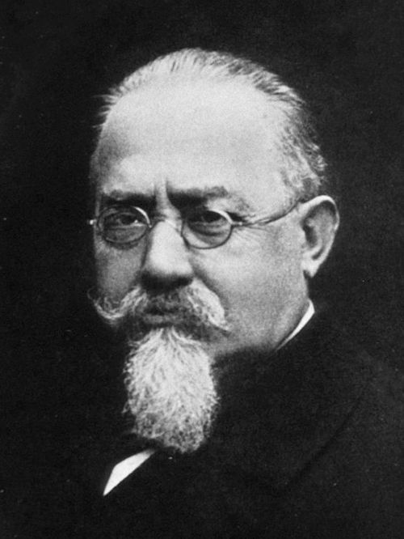
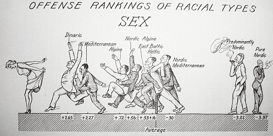
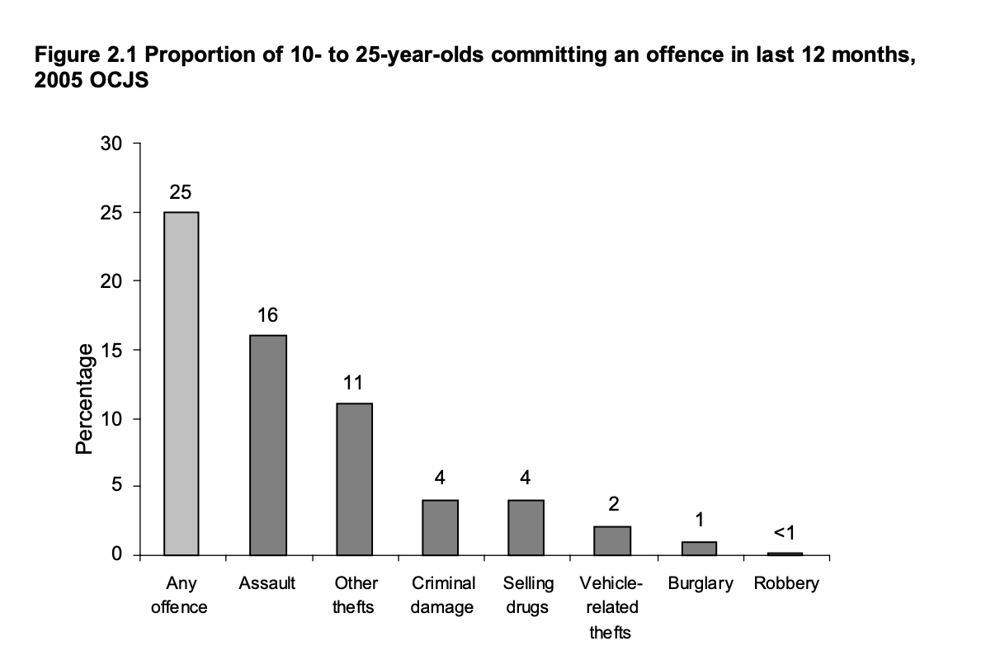
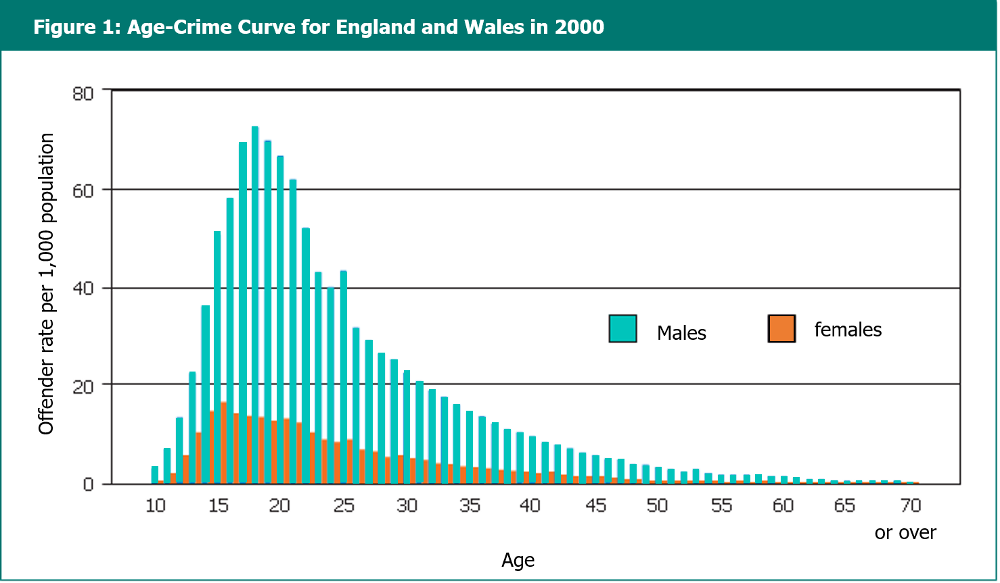
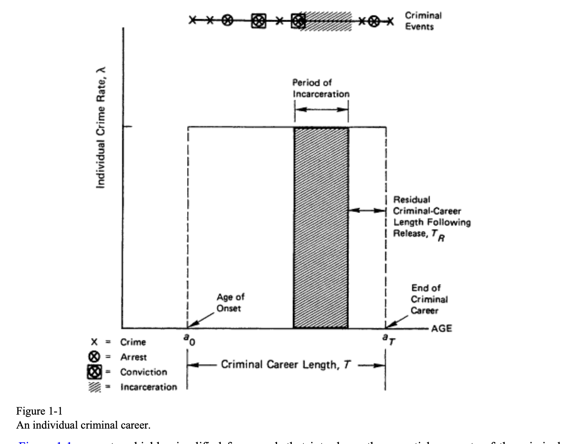
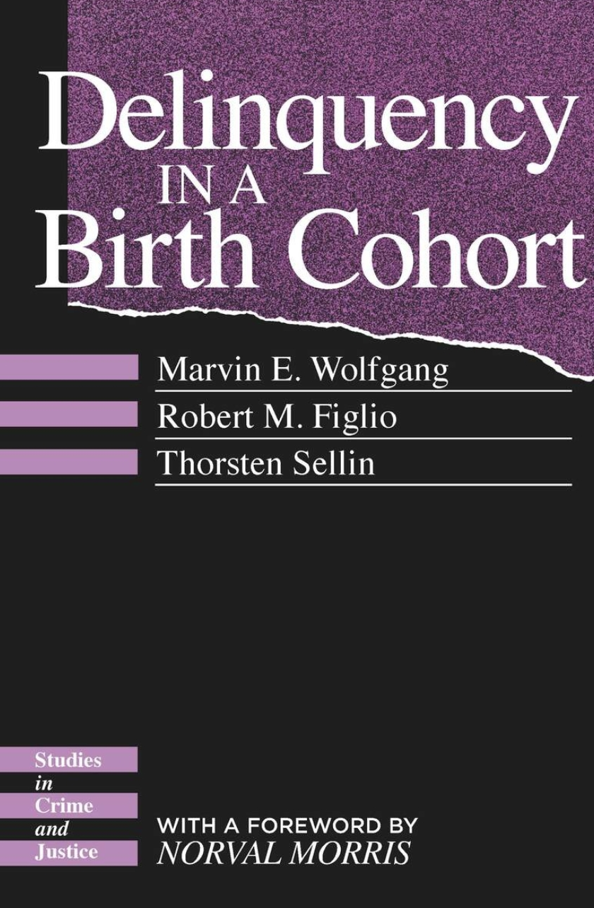
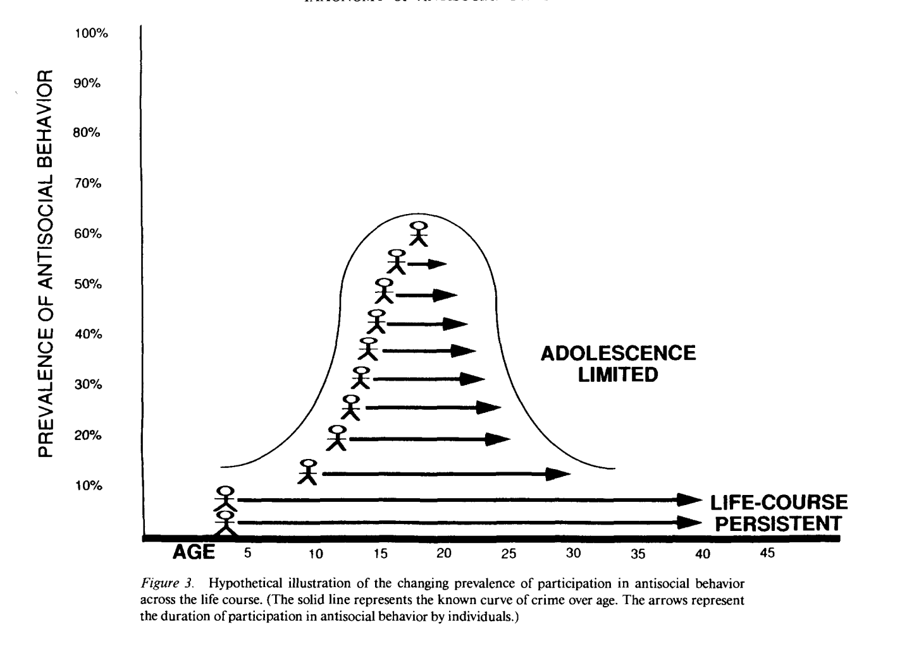

5 El delincuente
5.1 El hombre delincuente
La criminología que se desarrolla a partir del siglo XIX estaba obsesionada con identificar los marcadores que nos permitirían distinguir al hombre delincuente. A las personas nos gusta pensar en términos de blancos y negros, de malos y buenos, de fronteras claramente demarcadas entre lo diabólico y lo divino. La realidad, como veremos, es obstinadamente más compleja.
Durante el siglo XIX, cuando irrumpen las primeras explicaciones “científicas” del comportamiento criminal, la naciente psiquiatría:
“intentaba explicar por qué algunos delincuentes parecían imperturbables y especialmente crueles. Una y otra vez, estos psiquiatras volvían al enigma de las personas que cometían delitos repetidamente, a veces de forma obsesiva, sin importar el castigo o el tratamiento que recibieran. Descubrieron que estas personas tienden a cometer delitos espantosos y despiadados, lo que supuestamente demostraba su incapacidad para identificarse con sus víctimas. La criminología comenzó con los esfuerzos por comprender científicamente este tipo de delincuentes. Los teóricos utilizaron diferentes términos para identificar la condición que causaba la reincidencia, aparentemente incontrolable: trastorno moral, locura moral, manía sin delirio, degeneración, imbecilidad moral, incorregibilidad, criminalidad innata, incapacidad hereditaria. Pero aunque las etiquetas diferían, el objetivo era el mismo: explicar las acciones de los delincuentes moralmente dementes. Los teóricos concluyeron que la locura moral era un estado o condición” (Rafter 2011, 149)
Los teóricos del siglo XIX que comenzaban a reflexionar sobre el hombre delincuente pensaban que este comportamiento repetido era el producto de una condición innata y que quienes sufrían de ella carecían de sentido moral. Esta locura moral se pensaba como una deficiencia o condición biológica.
Aunque ni mucho menos fue el único autor en pensar en estos términos, suele citarse al médico italiano Cesare Lombroso (1885-1909) como particularmente influyente en la cristalización de estas ideas. Lombroso publicó en 1876 su influyente libro L’uomo delinquente. Lombroso proponía que el hombre delincuente, en particular lo que el llamaba el delincuente nato, se distinguía del resto de los mortales por una serie de anomalías físicas y que, influenciado por las teorias de la evolución de Darwin, representaban una reversión a una forma primitiva de ser humano.

Lombroso era un médico que había trabajado para el ejercito italiano y había estado al mando de varios asilos mentales. Estaba comprometido con el desarrollo de una ciencia sobre el comportamiento criminal y estaba influenciado por el positivismo científico, un movimiento filosófico que aspiraba al análisis racional y que ponía su fe en el progreso científico. El positivismo proponúa un enfoque empírico e inductivo para comprender las leyes de la naturaleza y del comportamiento humano. Era un método consistente en el análisis de datos obtenidos por medio de la observación científica.
En su libro estudio la fisionomía de 832 delincuentes vivos, 390 de los cuales fueron comparados con 868 soldados italianos y 90 “lunáticos” y fue a partir de estas comparaciones que desarrollo sus conclusiones. Para Lombroso había varios tipos de delincuentes, uno de los cuales era el delincuente innato. Seres que no han seguido la evolución genética natural que el resto de los humanos, lo cual se manifestaba en: múltiples deficiencias degenerativas de tipo físico (orejas grandes, brazos demasiado largos, narices torcidas, etc.); peculiaridades sensoriales y funcionales (p.ej., menos sensibilidad al dolor y al contacto); una falta de sentido de la moralidad (p.ej, incapacidad de arrepentimiento); así como otras manifestaciones (lenguaje criminal, uso extensivo de tatuajes, etc.).
La teoría de la degeneración, según la cual determinadas pautas de comportamiento problemático como la delincuencia o el alcoholismo, eran el resultado de saltos hacia atras en el proceso de la evolución humana que podía transmitirse genéticamente se convirtió en otras de las obsesiones de los científicos del período (Rafter 2011).
En Estados Unidos fue particularmente influyente el estudio de la familia “Jukes” realizado por Richard Dugdale (1877), que usaba cartas genealogicas y la historia criminal y social de esta familia, para intentar demostrar la transmisión hereditaria de este tipo de pautas de comportamiento problemático y avanzar la idea de un determinismo biólogico más duro.
Estas ideas perduraron hasta bien entrado el siglo XX. El antropologo Earnest Hooton publicaba en 1939 Crime and the Man y The American Criminal conluyendo que los delincuentes eran biológicamente inferiores y que determinados grupos etnoraciales eran mas comunes en particulares formas delictivas. Para hacer más atractiva sus ideas, Hooton tomó la decisión, sin duda desaconsejable, de ilustrar su texto con un estilo de un mal gusto asombroso.

Hoy en día estas ideas nos parecen lo que son, ridículas. Aunque estos autores proponían el desarrollo de conclusiones sobre la base de la observación empírica, sus métodos y presuposiciones eran, contemplados con nuestro conocimiento actual, burdos y primitivos. Las implicaciones políticas de estas ideas fueron tremendamente problemáticas. Dieron lugar al movimieno eugenésico que propuso el internamiento, esterilización y otro tipo de medidas orientadas a prevenir la reproducción biológica de estas personas que se consideraban contaminadas (Rafter 1997). Más tarde en Europa el sustrato de estas ideas alimentó la barbarie nazi y su “solución final” para proteger la “limpieza de la raza” (Rafter 2008).
La creciente popularidad de explicaciones sociales de la delincuencia durante el siglo XX sirvió para que estas perspectivas fueran perdiendo fuelle. Lo patológico se desplazó del individuo a lo social. Los sociologos, asociados entre otras a la llamada Escuela de Chigaco y que de forma más dedicada empezaron a estudiar el delito a partir de la década de 1930, rechazaban la lógica de los darwinistas sociales de que los pobres, y los delincuentes entre ellos, eran biológicamente inferiores y habían caído al último peldaño de la sociedad por ser de menor valía. Los progresistas preferían una interpretación más optimista: los pobres eran empujados por su entorno —no nacían así— a una vida de delincuencia.
5.2 “Todos lo hacen”
La década de los 1940 supuso un antes y un después en la conceptualización de los delincuentes. Durante este período se empezó a experimentar con el método de las encuestas de autoinforme (Kivivuori 2011). Estas encuestas, inicialmente empleadas solamente con muestras de menores en ambitos educativos, preguntaban a los participantes en las mismas sobre su participacion en actividades desviadas y delictivas. Aunque inicialmente se preguntaba sobre comportamientos infractores de caracter casi trivial a lo largo de los ultimos 75 años se pasó a usar estas encuestas para estudiar comportamientos delictivos más serios con muestras también de mayor edad.
Mientras que durante el siglo XIX el delito se conceptualizaba como una aberración, estas encuestas comenzaron a generar la idea de que “todo el mundo lo hace”, que el comportamiento delictivo es mucho más común de lo que se pensaba y que muchas de las diferencias de clase, raza, y otros marcadores individuales entre delincuentes y no delincuentes desaparecían o se diluían mucho cuando en vez de comparar penados y no penados comparabamos personas que decían cometer infracciones en estas encuestas con quienes no las confesaban. ¿Cómo seguir manteniendo la idea de los delincuentes como seres diferenciados y especiales si el comportamiento delictivo es tan relativamente común y presente en todos los grupos sociales? ¿Quizás lo que tenemos que preguntarnos es porque dados niveles similares de participación delictiva en distintos grupos sociales es porque los penados, aquellos que perseguimos policial y penalmente, proceden particularmente de determinados grupos sociales y no de otros?
En 1940-41 fue el sociologo norteamericano Austin Porterfield quien conducía el pionero estudio que lo cambió todo. Publicado en 1943 en un articulo titulado Delinquency and its outcome in Court and College y posteriormente en su libro de 1946 Youth in Trouble: Studies in Delinquency and Despair.
Porterfield fue uno de los primeros autores en demostrar en detalle como el control social conforma la poblacion de delincuentes registrados y de que forma las estadisticas criminales son construcciones sociales. Su estudio comparando los delincuentes penados y los estudiantes universitarios mostraba una prevalencia parecida en el tipo de infracciones que medía. Su conclusión era que:
“Los delincuentes no son una subespecie del homo sapiens…. La conducta antisocial de estudiantes y penados sugiere los mismos anhelos fundamentales: nuevas experiencias, aventura, estimulación, retos, reconocimiento, respuestas personales - en resumen, el completo espectro de emociones humanas” (Porterfield 1946, 45)
Desde entonces cientos de estudios han usado encuesta de autoinforme, algunas con muestras nacionales y como parte de esfuerzos comparativos a nivel internacional, como el International Self-Report Study, en el que en varias ocasiones ha participado España como vimos en capítulos anteriores.
Quizás una de las encuestas de este tipo que de forma más minuciosa, y con una muestra representativa nacional, aspiró a medir de forma muy detallada delincuencia de caracter no solamente leve sino tambien seria a efectos de realizar estimaciones rigurosas de caracter nacional fue la Offending Crime and Justice Survey realizada por el británico Home Office.

Según este estudio un cuarto de la población de Inglaterra y Gáles con una edad comprendida entre los 10 y 25 años había cometido un delito en los previos 12 meses. La mitad de estas infracciones eran según los autores “delitos serios” (lesiones, robos de vehículos, robos en viviendas, venta de drogas de clase A o robos con violencia) (Wilson, Sharp, y Patterson 2006). Este tipo de datos seriamente cuestiona la idea de que podemos distinguir claramente entre delincuentes y no delincuentes.
A nivel teórico y conceptual, la criminología siguió profundizando en los problemas de la imagen del hombre criminal planteado por el positivismo criminológico. Así, David Matza en su influyente Delinquency and Drift cuestionaba la idea positivista del delincuente como esencialmente diferente o patológico. Para Matza (1964) las teorías positivistas predecían más delincuencia de la que ocurre por varias razones:
Los delincuentes no delinquen de forma persistente sino de forma episódica, la mayor parte del tiempo se la pasan en actividades convencionales
Los delincuentes llega un momento en que experimentan “reforma de maduración”, dejan de delinquir una vez llegada cierta edad
La escuela positivista negaba la capacidad de agencia de los delincuentes, mostrándolos como individuos sujetos a fuerzas totalmente fuera de su control
5.3 La curva del delito y la carrera criminal
De la misma forma que durante la década de 1940 el método del autoinforme revolucionó la criminología, a partir de los años 1970 otra innovación metodológica vino a condicionar nuestra visión del delincuente. Durante este período comienzan a sucederse estudios de naturaleza longitudinal que seguían a muestras o cohortes locales de individuos durante largos períodos de sus vidas. Estos estudios permitieron examinar de forma sistemática de qué forma la participación en actividades delictivas cambia a lo largo del tiempo.
Uno de los más claros correlatos del delito es la edad. Sabemos que existe una relación curvilínea entre delincuencia y edad. Hirschi y Gottfredson (1983) lo caracterizaban como un de las pocas observaciones fácticas en criminología que no es cuestionada por nadie.
La curva suele adoptar la forma ilustrada en la siguente imagen.

La participación en actividades delictivas aumenta durante la adolescencia, alcanza un pico cerca de la mayoría de edad y, a partir de ahí, comienza a descencer con el paso del tiempo.
En 1986 se publica un muy influyente informe del National Research Council coordinado por Al Blumstein que consolida el concepto de la carrera criminal y una serie de ideas básicas ligadas a este concepto. Una carrera criminal se define como “la caracterización de la secuencia longitudinal de delitos cometidos por un individuo” (Research Council" 1986, 12). Una carrera criminal está definida por varios parametros:
Participación: la distinción entre quienes inician una y quienes no.
Frecuencia: la tasa delictiva de los delincuentes mientras se encuentran en activo. Esto es, el número de delitos cometidos por cada delincuente por cada año en que se encuentran activos. Este parametro vino a denotarse con la letra griega lambda.
Seriedad: la gravedad de los delitos cometidos.
Escalada: la tendencia a cometer delitos más serios.
Duración de la carrera: el período de tiempo que transcurre desde que los delincuentes se inician en la comisión de actos delictivos y el momento en que dejan de cometer delitos.
Estos elementos se pueden ver representados en la figura que incluían en el primer capítulo de este informe:

Las carreras criminales tienen un inicio (en inglés “onset”) y un momento en el que finalizan. Durante este período en el que se encuentran activos los delincuentes cometen un número de delitos X, una minoría de los cuales son detectados y sancionados por el sistema penal (dando lugar a periodos en los que los delincuentes, si encuentran en prisión, se encuentran incapacitados para cometer delitos que requieran su presencia física fuera de la prisión).
Durante años la investigación criminológica se ha esforzado en tratar de estimar todos estos parametros (edad de iniciación, lambda, duración de carreras criminales, etc.), siendo una labor arduo compleja. Evidentemente, estas cantidades varían en función de la persona.
Por lo que aquí respecta, lo importante a subrayar es que este enfoque supuso un paso determinante a entender la delincuencia como una etapa transitoria en la vida de las personas que cometen algún delito en su vida, no como una calidad o condición inmutable de las personas. Tan relevante es ahora esta relación que:
“A los teóricos se les recuerda con frecuencia quesus explicaciones sobre la de incuencia deben ajustarse a la distribución por edades, y las teorías se juzgan a menudo por su capacidad para abordar la «reforma madurativa», la «remisión espontánea» o el efecto del «envejecimiento».” (Hirschi y Gottfredson 1983, 553)
La criminología evolutiva que ha dominado el estudio de los delincuentes durante las últimas décadas básicamente ha venido a aceptar que (Steffensmeier, Slepicka, y Schwartz 2025, 241):
“El grupo de edad de entre los 15 a 19 es el que exhibe una mayor tasa de participación en actividades delictivas.
La delincuencia entre los adolescentes tiene tasas de prevalencia altas, con un porcentaje elevado de los mismos participando en actividades delictivas.
La curva del delito se caracteriza por un rápido aumento y un pico temprano, seguido de un rápido descenso inicial y luego un descenso gradual.”
¿Son las premisas de la curva de la edad y el delito universales
De forma relacionada dentro de la criminología se vino a desarrollar lo que se llamó el paradigma del factor de riesgo, que tuvo entre sus más prolíficos defensores al británico David Farrington, que fue investigador en uno de los primeros y mas famosos estudios longitudinales de la delincuencia el Cambridge Study in Delinquent Development, un estudio de 411 varones nacidos en Londres en 1953 en barrios empobrecidos y que fueron seguidos desde que tenían 8/9 años hasta sus 48.
Este paradigma invitaba a la identificación de factores de riesgo asociados con el inicio (y otros parámetros como persistencia, escalada, etc.) de carreras criminales para a continuación proponer métodos de prevención que sirvan para reducirlos (Farrington 2000, 2).
“El paradigma de prevención de factores de riesgo fue importado a la criminología desde la medicina y la salud pública … Este paradigma se ha utilizado con éxito durante muchos años para combatir enfermedades como el cáncer y las cardiopatías. Por ejemplo, los factores de riesgo identificados para las enfermedades cardíacas incluyen el tabaquismo, una dieta rica en grasas y la falta de ejercicio. Estos pueden abordarse animando a las personas a dejar de fumar, a seguir una dieta más saludable y baja en grasas, y a hacer más ejercicio.”
Un factor de riesgo es simplemente algo que incremente la probabilidad de la actividad delictiva, no necesariamente una causa, sino simplemente un factor que aumenta dicha probabilidad. Este enfoque condujo a la proliferación de modelos explicativos de la participación en actividades delictivos de tipo multifactorial. Por ejemplo, para Murray y Farrington (2010) Los factores de riesgo más importantes que correlacionan con la delincuencia incluyen la impulsividad, un coeficiente intelectual bajo y un rendimiento escolar bajo, una supervisión parental deficiente, una disciplina parental punitiva o errática, una actitud parental fría, el maltrato físico infantil, los conflictos parentales, las familias desestructuradas, los padres antisociales, las familias numerosas, los bajos ingresos familiares, los compañeros antisociales, las escuelas con altas tasas de delincuencia y los barrios con altos índices de criminalidad.
5.4 El 6% crónico, los criminales de carreras y las trayectorias diferenciales de delincuencia
Otro de los primeros estudios longitudinales realizados en Estados Unidos también tuvo un impacto notable en nuestra imagen de los delincuentes. El Delinquency Birth Cohort fue un estudio liderado por el criminólogo Marvin Wolfgang que exploró las trayectorias delictivas de todos los 9945 niños nacidos en 1945 y que vivían en Filadelfia entre los 10 y los 18 años (Wolfgang, Figlio, y Sellin (1972)). Una vez establecida la cohorte, los investigadores recopilaron datos sobre los 3475 delincuentes que habían tenido contactos oficiales con la policía no relacionados con la seguridad vial entre los 7 y los 18 años de edad. A partir de estos datos oficiales, el estudio estimó las probabilidades de cometer el primer delito, la reincidencia, el aumento de la gravedad de los delitos a lo largo del período observado, la edad de inicio, etc.

El estudio documentó que había un 35% de probabilidades de que los niños hubieran sido arrestados al menos una vez por delitos distintos de infracciones de tráfico. Solo el 6 % de la cohorte eran delincuentes crónicos (habían sido arrestados al menos cinco veces antes de los 18 años) y este 6% eran responsables de más del 50 % de todos los delitos. Un estudio de una cohorte posterior, de 1958, replicó el primer estudio, excepto que incluyó a mujeres. En el segundo estudio, el porcentaje de delincuentes crónicos fue del 7,5 %, y cometieron el 69 % de los delitos indexados. Alrededor del 9 % de los 13800 niños del segundo estudio y alrededor del 2 % de las 14500 niñas cometieron un delito violento que causó lesiones a una persona.
Los datos de este estudio se vinieron a interpretar como un complemento al momento “todos lo hacen” generados por los primeros estudios de auto-informe. Aunque era cierto, y así lo demostraba también este estudio, que el comportamiento infractor es mas común de lo que a menudos pensamos (el 35% de los menores en la primera cohorte tenía algun antecedente policial), la clara detección de un porcentaje menor de estas cohortes que exhibían una mayor propensión a la reincidencia tuvo también repercusiones científicas y políticas importantes.
A partir de entonces empezó a hablarse del “6% crónico” para designar de forma simbólico a ese subconjunto de delincuentes con una particular propesión hacía la comisión de delitos. Aunque los avances realizados durante el siglo XX hacían ridículo el pensar que podemos diferenciar a los delincuentes de los no delincuentes, este tipo de estudios vino a sugerir de alguna forma que hay un particular perfil de delincuentes con niveles altos de reincidencia que quizás nos debería preocupar.
Años más tarde la también normeamericana Terrie Moffitt publicó un muy influyente artículo que trataba de reconciliar los datos que estudios longitudinales posteriores habían ido generando sobre trayectorias delictivas. En un artículo publicado en 1993 y titulado Adolescence-Limited and Life-Course-Persistent Antisocial Behavior: A Developmental Taxonomy la profesora Moffitt proponía la existencia de dos tipos ideales de trayectorias delictivas, la trayectoria limitada a la adolescencia y la trayectoria antisocial persistente a lo largo de la vida.
Para Moffitt (1993), el comportamiento antisocial es muy común en la adolescencia. Según ella habría un subtipo de personas que cometen delitos que inician sus breves carreras criminales durante la adolescencia y la culminan al transitar a la vida adulta. Este grupo sería el que mostraría una trayectoria delictiva limitada a la adolescencia. Para Moffitt (1993) sobre todo los deseos de aventura e independencia y los cambios hormonales y biológicos durante este período, combinado con las malas influencias de los iguales serían los factores clave para entender el comportamiento antisocial de las personas en esta trayectoria.
“Presento tres hipótesis etiológicas. El comportamiento antisocial limitado a la adolescencia está motivado por la brecha entre la madurez biológica y la madurez social, se aprende de modelos antisociales que son fácilmente imitables y se mantiene de acuerdo con los principios de refuerzo de la teoría del aprendizaje.” (Moffitt 1993, 685)
Para Moffitt (1993) el comportamiento delictivo de este subgrupo puede considerarse comportamiento social adaptativo, no sería en su opinión posible conceptualizarlo como comportamiento patológico. Generalmente, personas en esta trayectoria desisten de la delincuencia al transitar a la vida adulta.

Por el otro lado tendríamos el subgrupo que Moffitt define como antisociales persistentes a lo largo de la vida. Un perfil que sería lo que Wolfgang, Figlio, y Sellin (1972) había identificado como el 6% crónico. Este subgrupo de delincuentes, según Moffitt (1993), tendría una edad de inicio en la delincuencia y el comportamiento problemático más temprano, ya se manifestaría durante la infancia, y el mismo se prolongaría en el tiempo bien pasado el tránsito a la vida adulta. Este grupo vendría caracterizado por la continuidad del comportamiento delictivo:
“A lo largo del tiempo estos individuos muestran manifestaciones cambiantes de su comportamiento antisocial: mordiscos y golpes a la edad de 4 años, hurtos en tiendas y faltar a clase a los 10, vender drogas y robar coches a los 16, atracos y violaciones a los 22, fraudes y abuso infantil a los 30; la disposición subyacente permanece, pero su expresión cambia forma en la medida en que nuevas oportunidades se presentan a lo largo de su desarrollo vital” (Moffitt 1993, 679).
El inicio temprano en la delincuencia de este subgrupo para Moffitt (1993) resulta de la interacción en estos menores de vulnerabilidades neuropsicológicas con el haber crecido en ambientes criminógenos. Es la presencia en la edad temprana de estos individuos de estos factores que pueden servirnos para entender el prematuro inicio de su comportamiento antisocial.
[TERMINAR SECCIóN] …
5.5 Los “psicópatas”
[EN CONSTRUCCIÓN]
5.6 Especialización y delincuencia
[EN CONSTRUCCIÓN]
5.7 Co-delincuencia
[EN CONSTRUCCIÓN]